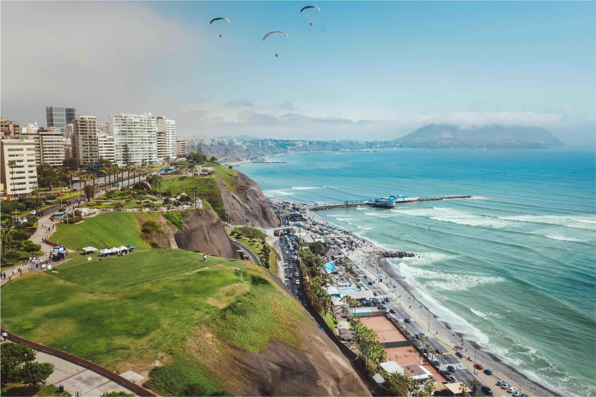
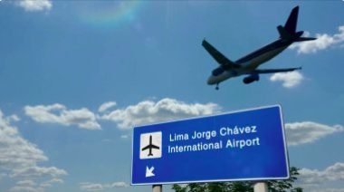

Sede
Universidad Nacional Mayor de San Marcos
La primera edición del Encuentro sobre Biomoléculas Antiguas en Latinoamérica se celebrará en el campus principal de la Universidad Nacional Mayor de San Marcos (Ciudad Universitaria, UNMSM), en Lima, Perú. Su auditorio principal, Ella Dunbar Temple, acogerá nuestro taller previo de medio día y el evento principal del encuentro. Cuenta con instalaciones accesibles para todos los asistentes con necesidades diversas. El lugar ofrece instalaciones bien equipadas, espacios cómodos y un entorno rico en historia y tradición académica que garantizará una experiencia óptima para los participantes, al tiempo que proporcionará a todos un ambiente inspirador para el intercambio científico.
Clima y gastronomía
Lima ofrece un clima excelente durante todo el año. Especialmente en noviembre, cuando la primavera está en pleno apogeo. Por lo tanto, recomendamos traer una chaqueta ligera, ya que las mañanas y las noches pueden ser frías o con niebla. La cocina peruana es muy apreciada en todo el mundo y ofrece grandes oportunidades para reforzar las redes de contactos de los asistentes a la reunión, lo que esperamos que todos puedan aprovechar para establecer nuevas colaboraciones.
¿Cómo llegar a Lima?
El nuevo Aeropuerto Internacional Jorge Chávez es un centro de conexiones para vuelos internacionales dentro de Latinoamérica. Se encuentra a 30 minutos (en taxi) o a 1 hora (en autobús) de la Ciudad Universitaria - UNMSM. Los mejores distritos cercanos para alojarse son Pueblo Libre, Lince y San Miguel (el más cercano a la playa).
¿Qué visitar en los alrededores?

Hay grandes yacimientos arqueológicos, como la Ciudad Sagrada de Caral-Supe (la ciudad más antigua de América) y Peñico, a solo 3-4 horas de CU-UNMSM. O si pasas más días en Perú, también puedes visitar la región andina o la Amazonía, ambas con varios yacimientos arqueológicos y rutas de senderismo.